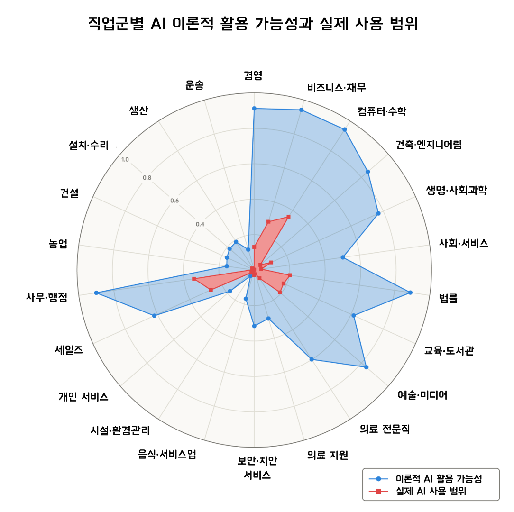

AI가 이론적으로 대체할 수 있는 업무 범위와 실제로 대체하고 있는 범위 사이에는 큰 격차가 존재합니다.
AI 노출도가 높은 직업군일수록 2034년까지의 고용 성장 전망이 낮고, 22~25세 신규 채용이 둔화되고 있습니다.
대규모 실업은 아직 발생하지 않았지만, 채용 시장의 변화는 이미 시작되었습니다.
AI가 내 일자리를 뺏는다고? 확실한 건 아직은 아니다.
문제는 '아직'이라는 단어가 점점 짧아진다는 것이다.
컴퓨터·수학 직군에서 AI가 이론적으로 처리할 수 있는 업무는 94%입니다. 그런데 실제로 AI가 쓰이고 있는 범위는 33%에 불과합니다. (출처: Anthropic Research, 2026) 이 격차는 기회일까요, 경고일까요?
Anthropic 연구팀이 AI의 노동시장 영향을 측정하는 새로운 지표를 발표했습니다. 기존 연구들은 "AI가 이론적으로 할 수 있는 일"만 측정했습니다. 이번 연구는 여기에 "실제로 AI가 쓰이고 있는 범위"를 결합한 '관측된 노출도(observed exposure)'라는 지표를 도입했습니다. 미국 노동통계국의 800개 직업 데이터와 Claude의 실제 사용 데이터를 교차 분석한 결과입니다. (출처: Anthropic Research, 2026년 3월)
경영 리더가 주목해야 할 포인트는 3가지입니다.
첫째, AI의 이론적 능력과 실제 사용 사이에는 구조적 격차가 존재합니다. 아래 그림은 22개 직업군의 이론적 AI 활용 가능성(파란색)과 실제 AI 사용 범위(빨간색)를 비교한 것입니다. 컴퓨터·수학 직군은 이론적 노출이 94%이지만 실제 사용은 33%입니다. 사무·행정 직군도 이론적으로는 90%가 자동화 가능하지만, 실제 사용은 이에 한참 못 미칩니다. 이 격차가 의미하는 것은 분명합니다. AI가 할 수 있는 일과 실제로 하고 있는 일 사이에 아직 넓은 여백이 남아 있다는 것입니다.

둘째, AI 노출도가 높은 직업군의 고용 성장 전망은 이미 둔화되고 있습니다. 미국 노동통계국의 2024~2034년 고용 전망 데이터를 분석한 결과, AI 노출도가 10%포인트 높아질 때마다 해당 직업군의 고용 성장률 전망이 0.6%포인트씩 낮아집니다. 단순히 이론적 가능성만으로는 이 상관관계가 나타나지 않습니다. 실제 AI 사용 데이터를 결합해야 비로소 보이는 패턴입니다.
셋째, 대규모 실업은 없지만 젊은 세대의 진입 장벽이 높아지고 있습니다. ChatGPT 출시 이후 AI 노출도 상위 직업군에서 대규모 실업률 변화는 관측되지 않았습니다. 그러나 22~25세의 취업률에서는 다른 양상이 나타납니다. AI 노출도가 높은 직업군에서 젊은 층의 월간 취업률이 약 14% 하락했습니다. 기존 인력이 해고된 것이 아니라, 신규 채용 자체가 줄어들고 있다는 의미입니다.
이 변화를 무시하면 두 가지 비용이 발생합니다.
인력 구조의 경직화 비용입니다. AI 노출도가 높은 직업군에서 젊은 인재의 유입이 줄어들면, 조직의 평균 연령이 높아지고 기술 전환 속도가 느려집니다. 이 연구에 따르면, AI 노출 상위 25% 직업군의 평균 소득은 하위 그룹보다 47% 높습니다. 고연봉 인력이 다수를 차지하면서 신규 채용이 줄어드는 구조는 인건비 부담을 가중시킵니다.
전략적 타이밍의 비용입니다. 현재 이론과 현실의 격차가 크다는 것은, AI 활용이 본격화되면 변화의 속도도 빠를 수 있다는 의미입니다. 과거 오프쇼어링(해외 이전) 예측에서 미국 일자리의 25%가 위험하다고 했지만, 10년 뒤 대부분의 직업은 건재했습니다. AI도 같은 궤적을 밟을 수 있지만, 이번에는 변화의 방향이 보이기 시작한 단계입니다.
팀별 주요 업무를 나열하고, 각 업무가 AI로 처리 가능한지 3단계(AI 단독 가능 / 도구 병행 시 가능 / 불가능)로 분류합니다. (예상 2시간, 팀장급 워크숍)
1단계에서 "AI로 가능하다"고 판단한 업무 중 실제로 AI를 쓰고 있는 업무가 몇 개인지 점검합니다. 이 격차가 클수록 자동화 잠재력이 높은 영역입니다. (예상 30분)
채용 예정인 직무가 AI 노출도 상위 직군에 해당하는지 확인합니다. 해당된다면, 동일 인력을 채용할 것인지, AI 도구 도입으로 대체할 것인지를 먼저 판단합니다. (예상 1시간)
AI 노출도가 높은 업무를 담당하는 직원에게 AI 활용 교육을 제공합니다. 반복 업무에서 판단·관리 업무로 역할을 재정의합니다. Claude, ChatGPT 등 도구별 업무 적합성을 테스트합니다. (예상 2주, 파일럿 1개 팀)
이론적 노출도만 보고 조직을 재편하면 위험합니다. 이 연구가 보여주는 핵심은 이론과 현실의 격차입니다. "AI가 할 수 있다"와 "AI가 하고 있다"는 다릅니다. 성급한 인력 감축은 조직 역량의 공백을 만듭니다.
AI 노출도 지표는 미국 노동시장 기준입니다. 이 연구는 미국의 O*NET 직업 분류와 Claude 사용 데이터를 기반으로 합니다. 한국의 직무 구조와 AI 도입 속도는 다를 수 있습니다. 한국 상황에 맞는 자체 분석이 필요합니다.
격차가 빠르게 좁혀질 수 있습니다. 현재 이론 대비 실제 사용이 낮다고 해서 안심할 수 있는 것은 아닙니다. AI 도구의 성능은 매 분기 개선되고 있고, 기업의 도입 속도도 빨라지고 있습니다. 격차가 좁혀지는 속도를 지속적으로 모니터링해야 합니다.
AI는 아직 이론만큼 현실을 바꾸지 못하고 있습니다. 그러나 그 격차가 좁혀지는 곳에서부터, 채용 시장은 이미 달라지고 있습니다.
- Massenkoff, M. & McCrory, P. (2026). "Labor market impacts of AI: A new measure and early evidence", Anthropic Research, March 2026.
- Eloundou, T., Manning, S., Mishkin, P. & Rock, D. (2023). "GPTs are GPTs: An early look at the labor market impact potential of large language models", OpenAI Working Paper.
- Brynjolfsson, E. et al. (2025). AI employment effects by age group, ADP payroll data analysis.